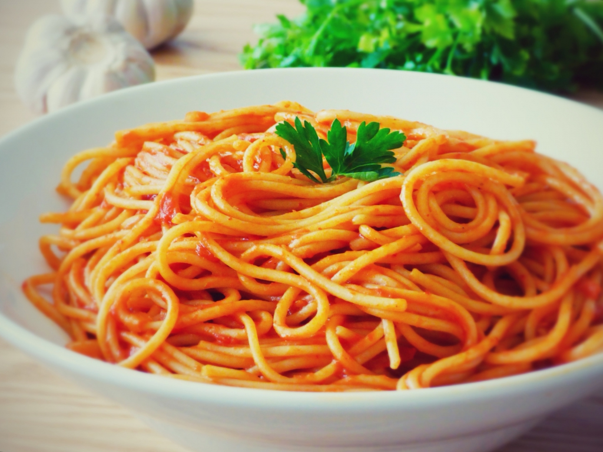

Red Spaghetti
home

Description
whats a kids favorite moment? Thats a tough question, well I know what moment it was for me! Coming home from school and seeing a pot filled with
"Red Spaghetti", Spaghetti with tomato sauce that is just so delicious that I would eat almost the whole pot alone!
Ingredients
- spaghetti - 500g
- chopped small onion - 1
- tomato paste - 250g
- water - 2.5 cups
- paprika - 2 spoons
- salt - 3 spoons
- pepper - half a spoon
- chicken soup - 2 spoons
Steps
- boil water in a pot and add salt so the water would be sea level salty
- add spaghetti and cook according to the manufacture instructions
- on a pan add some oil and fry the onion until golden (2-3 min)
- add the tomato paste and stir for one minute
- add water and all the spices stir well
- close lid and let it cook on medium hit for 10-15 minutes
- mix sauce and spaghetti
- Enjoy!